Milk Drop
I selected some key frames of a highspeed video of a milk drop. Video was taken in 6.163 Strobe Lab with Casie Chen and Nhat Nguyen.
High Speed Video
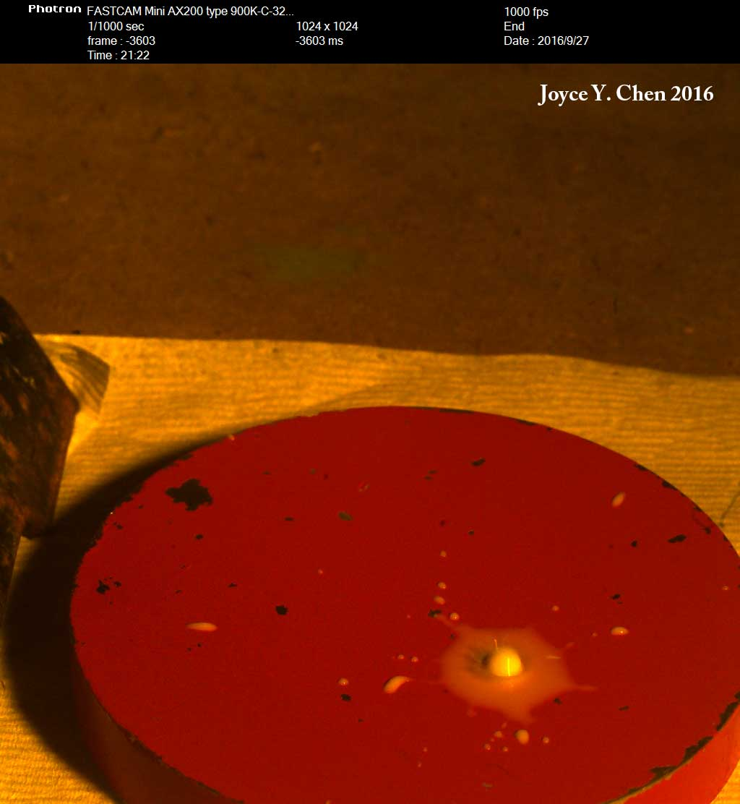 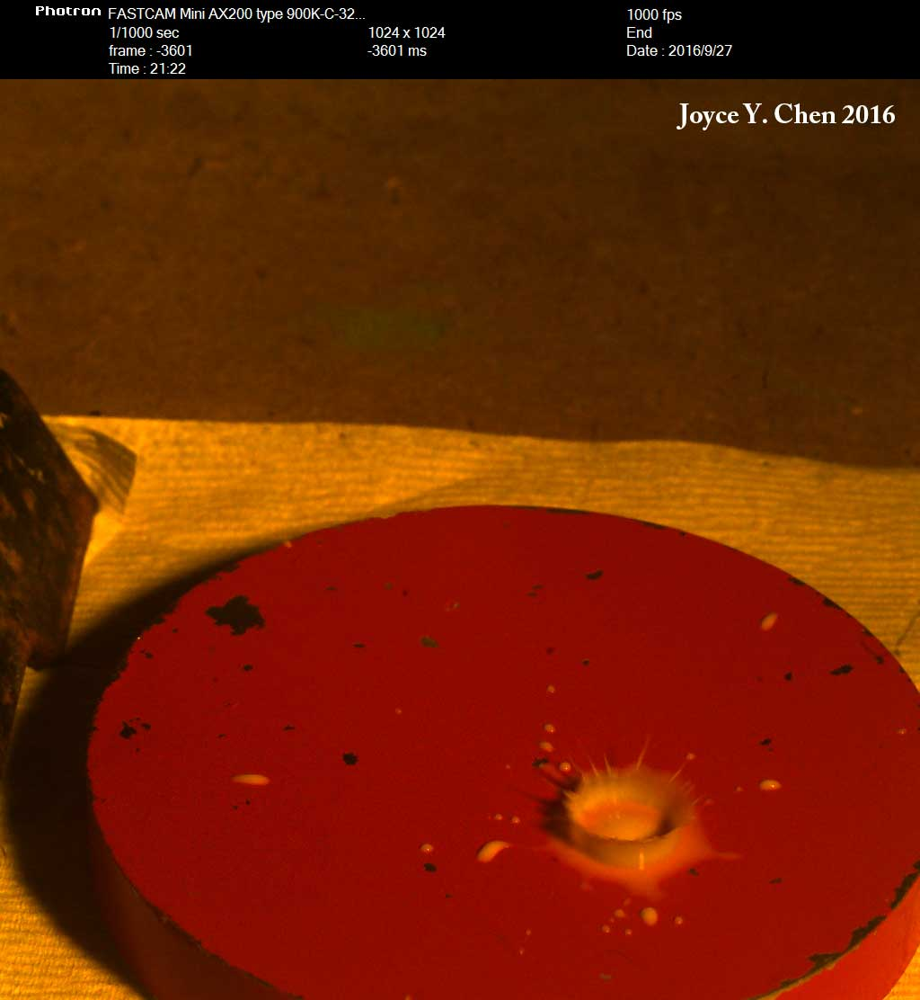 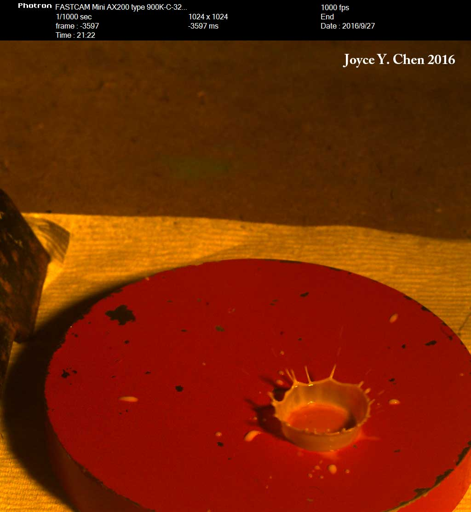
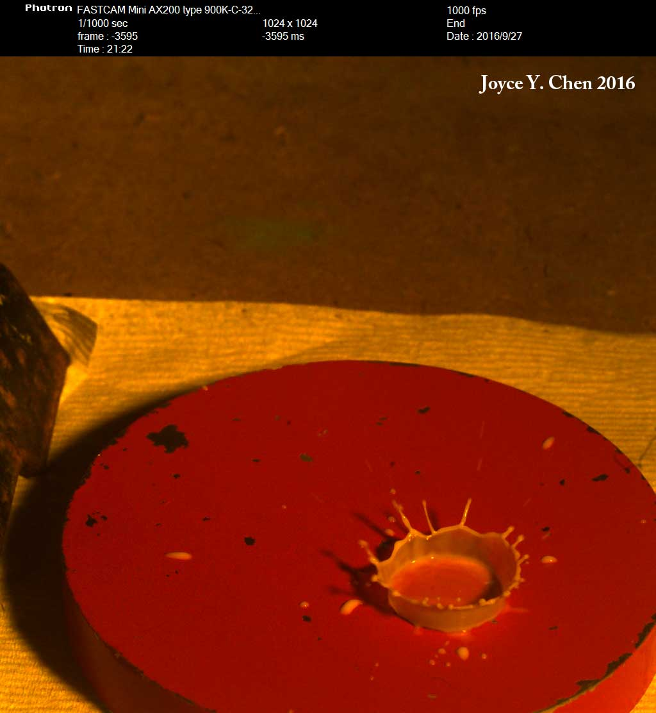
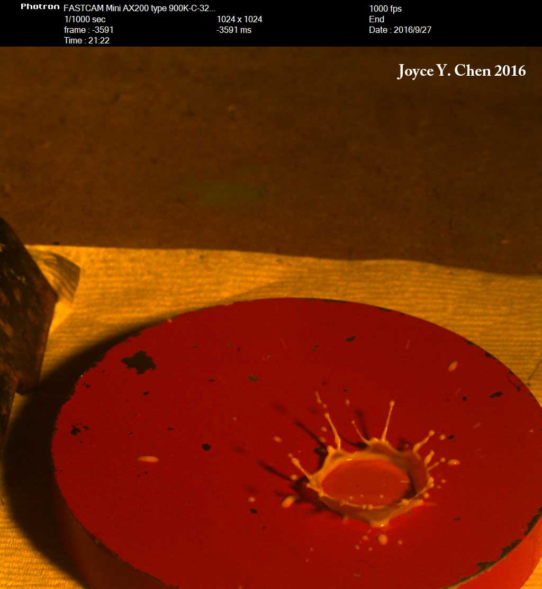
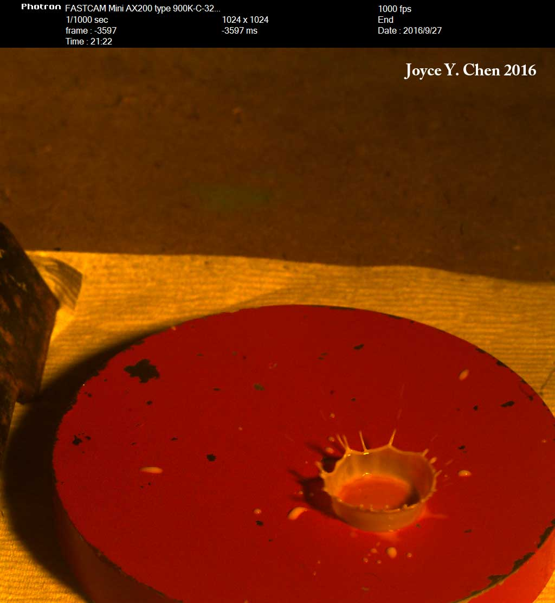
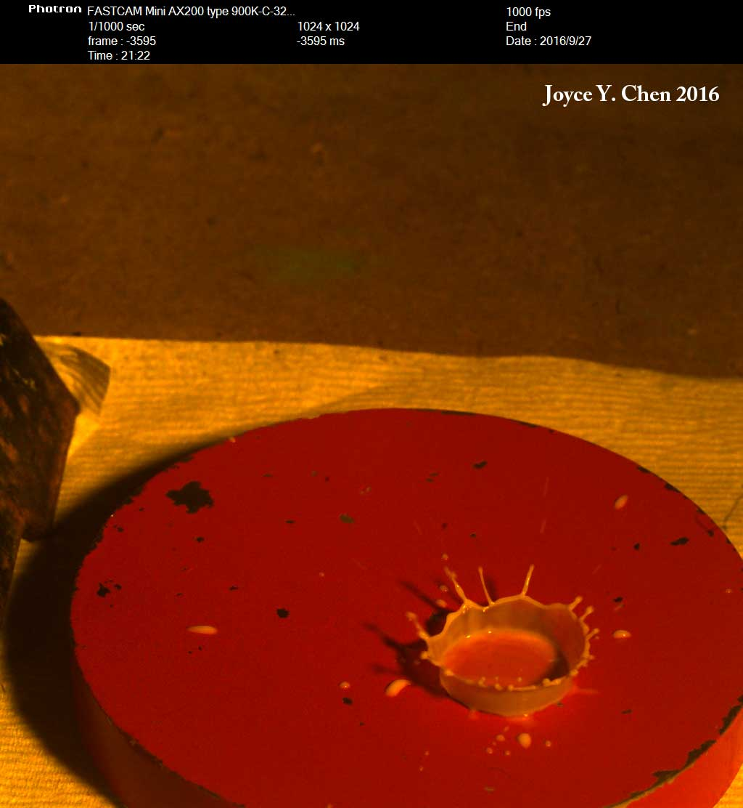
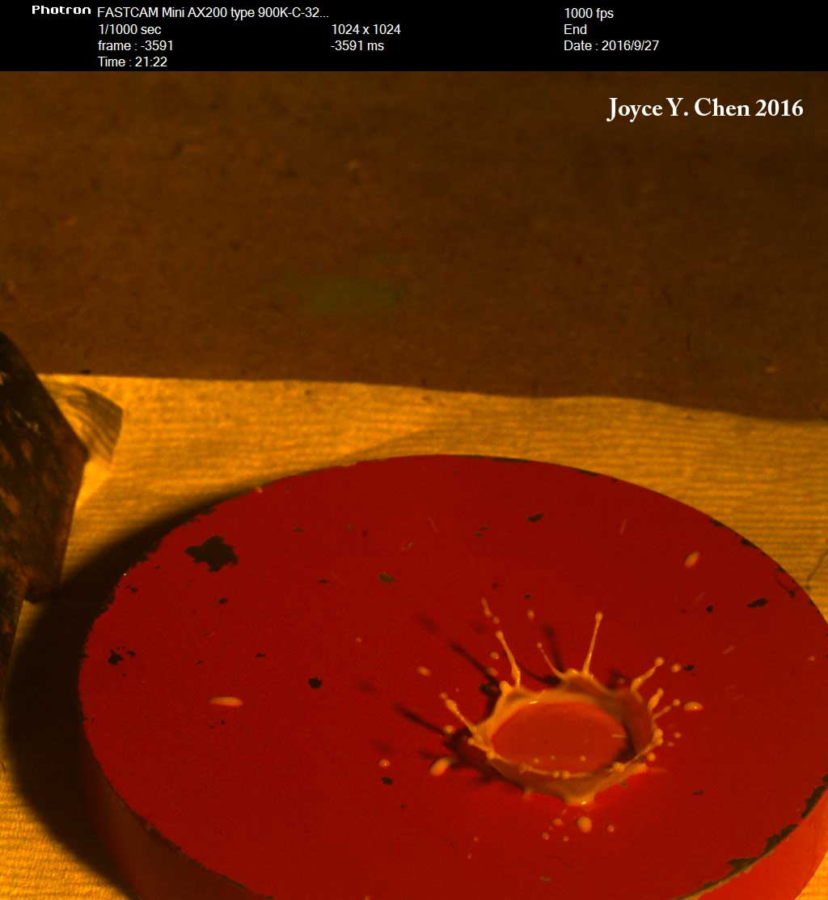
I selected some key frames of a highspeed video of a milk drop. Video was taken in 6.163 Strobe Lab with Casie Chen and Nhat Nguyen.
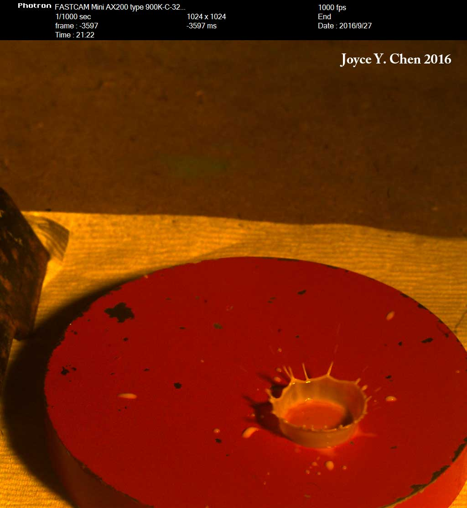
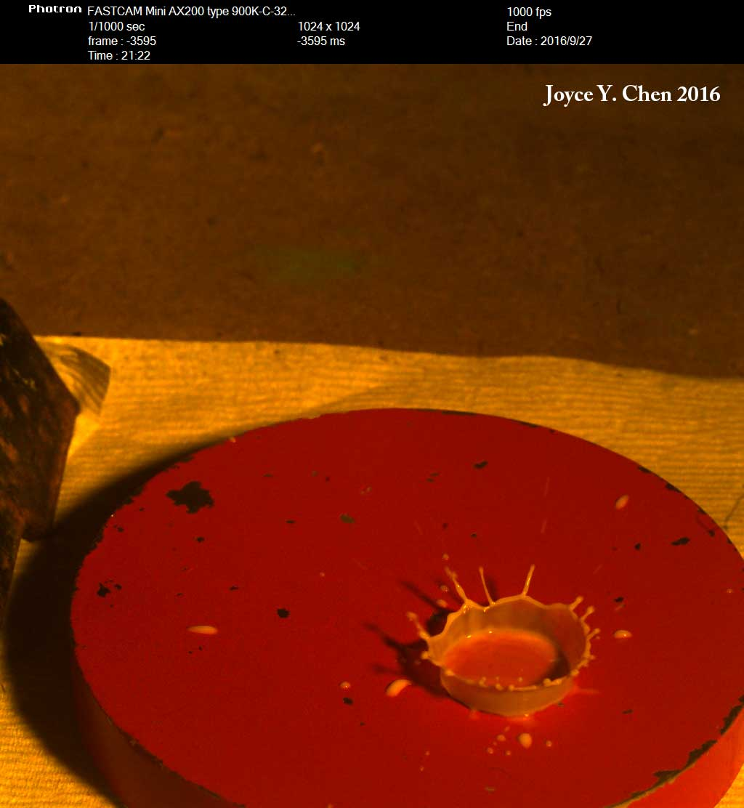
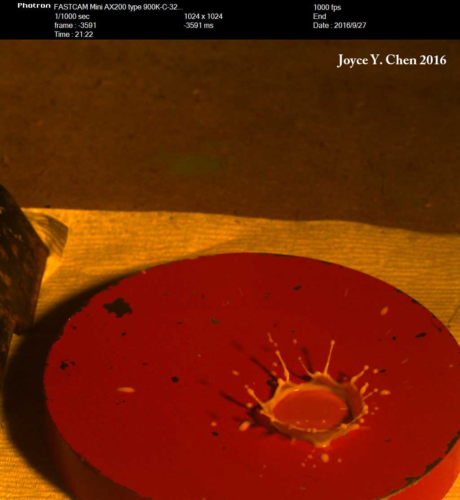